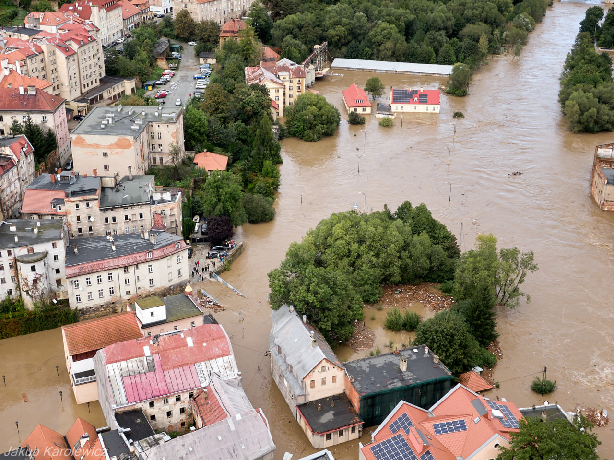
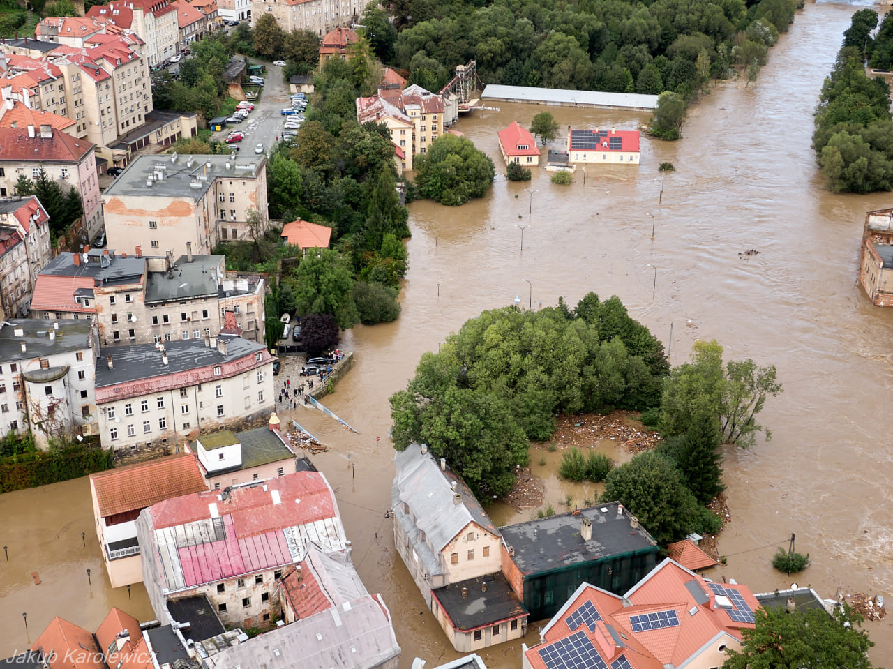

Katasrofa naturalna
jest to zdarzeniem związanym z działaniem sił natury. Mogą ją spowodować:
- Burza
- Wstrząsy sejsmiczne
- Pożary
- Powódź
- Silne wiatry
- lub lnne katastrofy
jest to zdarzeniem związanym z działaniem sił natury. Mogą ją spowodować:


Jest zjawiskiem atmosferycznym, charakteryzującym się intensywnymi, ulewnymi opadami, połączonymi często z wyładowaniami atmosferycznymi oraz silnym wiatrem. Może jej towarzyszyć również grad. W czasie burzy najlepiej schronić się w budynku. Nie należy słuchać przez słuchawki radia podłączonego do kontaktu, bezpieczniejsze są odbiorniki на baterie. Nie jest również bezpieczne kąpanie się w wannie, korzystanie z wody bieżącej, dotykanie kranu czy kaloryфера. Najlepiej odłączyć od źródła prądu wszystkie urządzenia elektryczne.
Jeśli zaskoczy Cię burza na otwartym terenie, powinieneś stosować się do następujących zasad:


Jeśli podczas burzy śnieżnej utkniesz w drodze, postępuj zgodnie z poniższymi zasadami:

 

Jej przyczy-ną są najczęściej spiętrzenia wód w rzekach, które występują z brzegów i zalewają duże obszary. Powodzie stanowią poważne nie-bezpieczeństwo dla zdrowia i życia ludzi oraz zwierząt. Powodują zniszczenia budynków, infrastruktury i upraw rolnych.
nie zwlekaj z ewakuacją , wykonuj pole-cenia wydawane przez kierujących akcją ;
dzieciom i osobom z ograniczoną świa-domością , znajdującym się pod twoją opieką , przypnij do ubrań kartki z ich imieniem i nazwiskiem oraz kontaktem do ich opiekunów ;
sprawdź , czy sąsiedzi usłyszeli infor-mację o ewakuacji , słuchaj lokalnych stacji radiowych lub telewizyjnych i oczekuj na komunikaty z zasadami postępowania ;
pamiętaj , aby zabrać ze sobą niezbędne leki przyjmowane przez domowników , ważne dokumenty , pieniądze , telefon komórkowy z ładowarką , radio na bate-rie , latarkę ;
bagaż spakuj w sposób umożliwiający łatwe przenoszenie , jego waga nie po-winna przekraczać 20 kg na jedną oso-bę , a w sumie 50 kg na rodzinę ;
słuchaj komunikatów radiowych i telewizyjnych , nie wracaj do domu , dopóki władze nie ogłoszą , że jest to bezpieczne ;
podczas wchodzenia do zalanych budynków , zachowaj szczególną ostrożność , używaj nieprzemakalnego obuwia , unikaj kontaktu z wodami powodziowymi .


Text 5...
Text 6...